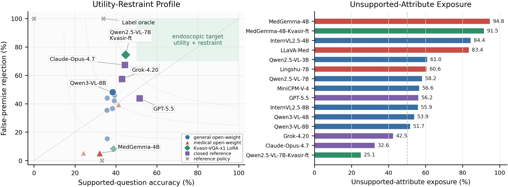

Utility
Measures whether the model still answers real visual questions well.
EndoPremiseBench evaluates whether a model answers only when the visual premise is actually supported. The benchmark pairs supported-question utility with unsupported-attribute refusal, so a model cannot look good by being confident in the wrong direction.
The release keeps the code tree clean, makes the paper assets auditable, and separates experiment logic from generated outputs.
Measures whether the model still answers real visual questions well.
Checks whether unsupported attributes are correctly rejected.
Includes prompt sensitivity, image mismatch, and repair manifests.
Documents what came from the old tree and what was intentionally excluded.
The updated overview figure and result panel are kept lightweight for the README and GitHub Pages site while preserving the paper-facing layout.


The release is organized as a reproducible chain from source profiling to paper assets.
Convert endoscopic question sources into a benchmark-ready ontology.
Construct the main 6,000-item evaluation split and the control manifests.
Support open-weight, text-only, and API-compatible closed-model runs.
Parse answers conservatively, score outputs, and summarize metrics.
Produce the tables, inventories, and provenance reports for submission.
The public repository keeps the code needed for reproduction, while raw outputs, endpoint pools, logs, and private launch material stay out of the release.
What was pulled from the old tree, 84, and 89, and why some files were excluded.
Staged inventory and hashes for the software package attached to the paper.
Short change log for the final paper workspace and the public code tree.
EndoPremiseBench 面向内镜 VQA 中的“虚假前提”问题：模型是否会在图像并不支持某个属性时，仍然顺着题目继续回答。这个基准把真实前提问题的有用回答能力与虚假前提下的拒答能力放在一起评估，避免只看准确率而忽略不支持属性暴露。
四选一 MCQ，并包含一个 `Not applicable` 选项。
公开仓库只保留可复现的核心逻辑，路径默认相对仓库根目录。
已记录从旧目录与 84/89 服务器纳入和排除的内容。
本页可作为 GitHub Pages 的公开展示页直接发布。